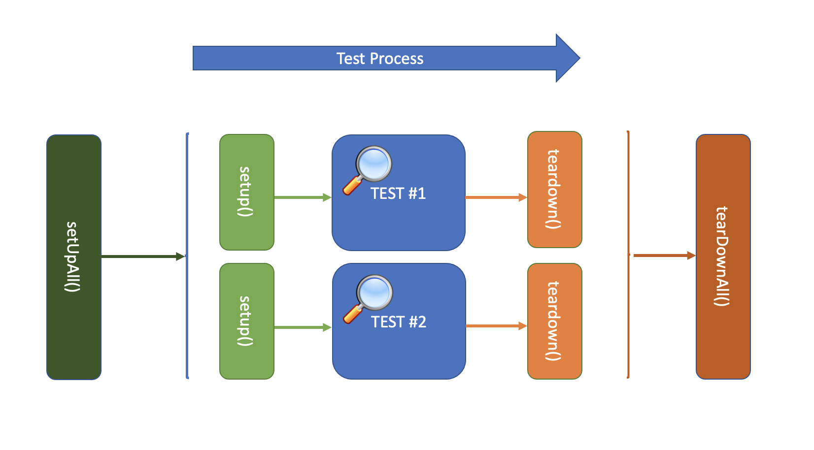

By writing tests we can ensure that the app continues to work as we add more features or change existing functionality.
- Unit Test: Unit tests are verifying the behavior of a single function, method, or class. The test package provides the core framework for writing unit tests.
- Widget Test: Because of nature of Flutter that all part of UI is Widget and written in Dart code. We can write UI component test like Unit tests in Flutter, and the flutter_test package provides utilities for testing widgets.
Writing Unit Tests helps you to confidently build new features, minimize bugs and refactor existing code. It also forces you to write better, more maintainable code that can be easily tested. with Unit test we following two important purposes:
- Making sure intended behavior is satisfied, also helps if someone else comes to our code easily understands the purpose of the unit.
- Making sure bad input/state does not cause undefined behavior we do not expect in the program.

Mocking is a way of simulating parts of your app that are outside the scope of the test so that they behave in specific way. Sometimes, unit tests might depend on classes that fetch data from web services or databases. This is inconvenient for a few reasons:
- Calling live services or databases slows down test execution.
- A passing test might start failing if a service or database returns unexpected results.
- It is difficult to test all possible success and failure scenarios.
To prevent this obstacle we can mock dependencies by creating an alternative implementation of a class or make use of the Mockito package as a shortcut.
setUpandsetUpAllmethod, Registers a function to be run before tests. the difference issetUpmethod will be called the function before each test is run. butsetUpAllcalls the Registered function once before all tests. we should prefersetUp, and only usesetUpAllif the callback is slow.tearDownandtearDownAllmethod, Registers a function to be run after tests. the difference istearDownmethod will be called the function after each test is run. butsetUpAllcalls the Registered function once after all tests.

- Tests can be grouped together using the
group()function. Each group's description is added to the beginning of its test's descriptions. test()creates a new test case with the given description and body. test body should call the specific functionality of the unit that needs to test and then assert the intended behavior of the unit.
import 'package:test/test.dart';
void main() {
setUp(() {
//TODO: Registers a function to be run before tests.
});
tearDown(() {
//TODO: Registers a function to be run after tests.
});
group('A group of test description', () {
test('Test #1 description', () {
//1st step: Setup - Arrange
//2nd step: Action - Act
//3rd step: Result - Assert
});
test('Test #2 description', () {
});
});
}
Let test a unit that return Computes the nth Fibonacci number
- Setup - initialize
FibonacciHelperclass - Action - Call
getFibonacciResult()method to receive result - Result - matcher should verify the resulting base on user data entry.
expect(result.returnValue, 13);
final fiboHelper = FibonacciHelper('7'); var result = fiboHelper.getFibonacciResult();You can see the test result below.
A widget test (UI component test) tests a single widget. Testing a widget involves multiple classes and requires a test environment that provides the appropriate widget lifecycle context, Widget tests following two important purposes:
- How application handles user actions such as tap button, input data.
- Whether the visual elements (buttons, text fields, images, and so on) are displayed correctly and work as intended.
The body of the testWidgets:
testWidgets('Widget test description',(tester) async {
// 1st step: Create the test Widget.
// 2nd step: Build the widget by pumpWidget through the tester.
// 3rd step: Create the Finders.
// 4th step: Use matchers to verify the appearance of the widget in the widget tree.
});
- Create a widget to test
MaterialApp myWidget = MaterialApp( home: ExampleScreen( viewModel: exampleViewModel, pressenterAction: mockPressenterAction, ), ); - Build the test widget inside the test environment by using the
pumpWidget()method. - The
pumpWidgetmethod builds and renders the provided widget. tester.pump(Duration duration)method provides additional ways to rebuild the same widget. This is useful if you're working with a StatefulWidget or animations. For example, tapping a button.tester.pumpAndSettle()Repeatedly calls pump() with the given duration until there are no longer any frames scheduled.- Use the Finder to locate widgets in a test environment
find.byKey(): Finds widgets by searching for one with a particular [Key].find.byType(): Finds widgets by searching for widgets with a particular type.find.text(): Finds [Text] and [EditableText] widgets containing string equal to the text argument.- Verify the widget using a Matcher
findsNothingVerifies that no widgets are found.findsWidgetsVerifies that one or more widgets are found.findsNWidgetsVerifies that a specific number of widgets are found.matchesGoldenFileVerifies that a widget's rendering matches a particular bitmap image ("golden file" testing).
Most common finder method:
Finally, verify the objects that appear on the screen using the Matcher constants. Ensure that the widgets appear on screen exactly one time. For this purpose, use the findsOneWidget Matcher.
Additional Matchers

First step of screen test is to verify appearance of all objects on the screen
- Create a
MaterialAppobject for testing pumpWidgetcalls runApp, and also triggers a frame to paint the app.await tester.pumpWidget(myWidget);- Create the Finders
find.byKey(): Finds widgets by searching for one with a particular [Key].find.byType(): Finds widgets by searching for widgets with a particular type.find.text(): Finds [Text] and [EditableText] widgets containing string equal to the text argument.
final titleFinder = find.text('Pay Card Balance'); final dividerFinder = find.byType(Divider); final descFinder = find.text('No Payment Due'); final currentBalanceFinder = find.text('Card Balance: \$${exampleViewModel.currentBalance}'); final buttonFinder = find.byKey(Key('Pay-More-Button')); - Use the
findsOneWidgetmatcher to verify that the Text widgets appear exactly once in the widget tree.expect(titleFinder, findsOneWidget); expect(dividerFinder, findsOneWidget); expect(descFinder, findsOneWidget); expect(currentBalanceFinder, findsOneWidget); expect(buttonFinder, findsOneWidget);
MaterialApp myWidget = MaterialApp(
home: ExampleScreen(
viewModel: exampleViewModel,
pressenterAction: mockPressenterAction),
);
You can see the test result below.